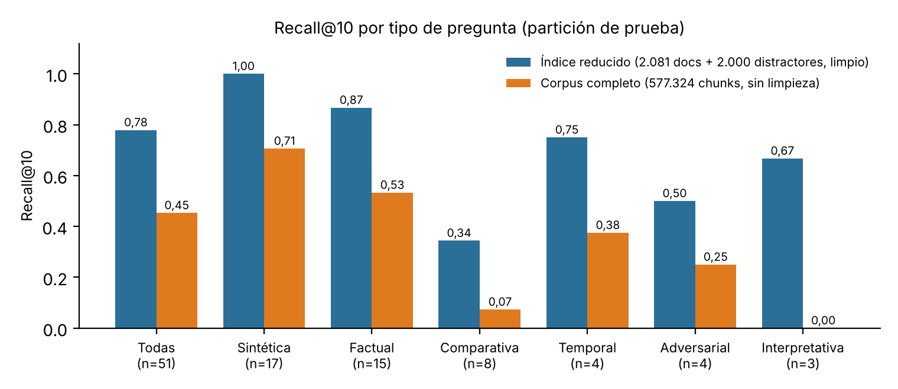

Se evaluó la recuperación de un asistente RAG (FastAPI, Milvus, Ollama y E5 multilingüe) con dos conjuntos de preguntas: el de Abel (40 preguntas, un tipo) y uno ampliado (60 preguntas verificadas contra el corpus, seis tipos, varios documentos relevantes, 10 sin evidencia). Con el corpus completo (577.324 chunks), el Recall@10 global en la partición de prueba es 0,453; sube a 0,779 en un índice reducido de 4.081 documentos, lo que muestra cuánto sobreestiman los índices pequeños. Eliminar el relleno de portal (avisos de cookies y de inicio de sesión) mejoró el Recall@10 de 0,591 a 0,669 en el gold nuestro. La abstención por umbral de coseno no funciona: con 0,80 no se detecta ninguna de las 13 preguntas sin respuesta en el corpus completo. Se construyó una variante RAG–Solr (BM25) con el mismo contrato de API; está probada con pruebas unitarias y simuladores, pero no se ha ejecutado contra un Solr real, así que este informe no contiene resultados de Solr.
docker-compose.solr.yml) y no modifica el flujo base.rag_chunks con id = chunk_id; el texto va en text_es o text_en según el idioma, con analizadores de cada idioma. Búsqueda edismax sobre ambos campos con el BM25 por defecto. Las puntuaciones BM25 no son comparables entre consultas, por lo que no se abstiene por puntuación (SOLR_SCORE_THRESHOLD=0)./retrieve y /ask aceptan backend (milvus por defecto); /health?deep=true añade el estado de Solr. Con Solr caído responde 503 indicando el servicio. El prompt versionado, el presupuesto de contexto y la validación de citas son los mismos en ambos motores.docker compose -f docker-compose.yml -f docker-compose.solr.yml up -d --build. Pruebas: pytest tests (6 pruebas del módulo Solr).| Gold | Preguntas | Tipos | Relevantes por pregunta | Verificación |
|---|---|---|---|---|
| Abel | 40 (20 desarrollo, 20 prueba) | sintética (34), no respondible (6) | 1 documento | Pendiente de revisión humana |
| Ampliado | 60 (16 desarrollo, 44 prueba) | factual, comparativa, temporal, interpretativa, adversarial, sin evidencia | 1 o más | Frase de evidencia literal comprobada por un validador; revisión manual en una muestra de 15 y en las sin evidencia |
La evidencia de cada pregunta ampliada es una frase literal que el validador busca en el texto de los documentos relevantes (normalizando mayúsculas, tildes y espacios). Hay 30 borradores adicionales que no se usaron. Los parámetros se calibran solo con desarrollo.
Recall@1/3/5/10, MRR y nDCG@10 a nivel de documento (los fragmentos se colapsan al primer rango), con k = 10 fragmentos. Abstención: precisión, recall y F1 con positivo = «debe abstenerse». Con k fragmentos se obtienen como máximo k documentos distintos, por lo que Recall@10 es una cota superior del que se obtendría con 10 documentos.
Los scripts (evaluar_gold.py, ejecutar_experimento_robusto.py) corrigen limitaciones del original: recuperan con k = 10 (el original usaba 5 y reportaba Recall@10), aceptan varios documentos relevantes, leen ambos formatos de gold, omiten modelos no instalados, se reanudan sin repetir llamadas y calibran el umbral en desarrollo. No guardan texto de preguntas ni de respuestas.
El análisis de los fallos mostró que 10 artículos de un mismo diario empiezan con el aviso de cookies y el mensaje de inicio de sesión; sus primeros fragmentos aparecían en el top-10 de 13 de 64 consultas (8 de 18 fallos de recuperación y 5 de las sin respuesta). La hipótesis de duplicados exactos se descartó: las tablas con y sin deduplicación fueron idénticas.
| Gold (prueba, índice reducido) | Métrica | Antes | Después |
|---|---|---|---|
| Ampliado (34 con respuesta) | Recall@1 | 0,444 | 0,532 |
| Ampliado (34) | Recall@10 | 0,591 | 0,669 |
| Ampliado (34) | MRR | 0,549 | 0,637 |
| Abel (17 sintéticas) | Recall@10 | 0,647 | 1,000 |

| Tipo | n | R@1 | R@5 | R@10 | MRR | nDCG@10 |
|---|---|---|---|---|---|---|
| Todas (completo) | 51 | 0,301 | 0,433 | 0,453 | 0,374 | 0,382 |
| Sintética (Abel) | 17 | 0,529 | 0,706 | 0,706 | 0,608 | 0,633 |
| Factual | 15 | 0,267 | 0,467 | 0,533 | 0,335 | 0,382 |
| Comparativa | 8 | 0,042 | 0,073 | 0,073 | 0,150 | 0,078 |
| Temporal | 4 | 0,250 | 0,375 | 0,375 | 0,375 | 0,347 |
| Adversarial | 4 | 0,250 | 0,250 | 0,250 | 0,250 | 0,250 |
| Interpretativa | 3 | 0,000 | 0,000 | 0,000 | 0,000 | 0,000 |
Corpus completo, sin limpieza. Control de validez: las 17 sintéticas dan R@1 = 0,529 y R@10 = 0,706, iguales a los del informe de Abel. Las cifras son una cota inferior: hay documentos válidos adicionales que el gold no marca. R@3 y R@5 aquí cuentan documentos distintos dentro de 10 fragmentos; el informe de Abel usa 5 fragmentos, por lo que solo R@1 y R@10 son comparables.
| Condición (prueba, 13 sin respuesta) | Umbral | Precisión | Recall | F1 |
|---|---|---|---|---|
| Índice reducido, umbral fijo | 0,80 | 1,000 | 0,077 | 0,143 |
| Índice reducido, calibrado en desarrollo | 0,83 | 1,000 | 0,231 | 0,375 |
| Corpus completo, umbral fijo | 0,80 | – | 0,000 | – |
| Corpus completo, calibrado en desarrollo | 0,84 | 0,500 | 0,154 | 0,235 |
Las puntuaciones máximas de las preguntas sin respuesta (0,79–0,92) se solapan con las de las que sí tienen respuesta (0,85–0,93). El umbral calibrado se obtuvo con solo 3 casos a abstener en desarrollo, así que es poco fiable. En un barrido sobre prueba (descriptivo, no para elegir el umbral) el mejor F1 es 0,62 en el índice reducido y 0,39 en el completo.
gemma2:2b falló en las 64 preguntas y qwen2.5:1.5b respondió 15 de 24 (un 503 tras 241 s, igual al tiempo máximo de 240 s configurado, probablemente por una generación abandonada al interrumpir el proceso). No se reportan métricas de generación de esa corrida. En el experimento de Abel (4 modelos, 80 corridas, 17 respondibles, una repetición) llama3.2:1b y gemma2:2b citaron fragmentos válidos en 16 y 14 de 17, llama3.2:3b en 6 y qwen2.5:1.5b en 5, y ningún modelo se abstuvo en las no respondibles; la corrección de las respuestas no se evaluó.Pendiente de ejecución. Los comandos están en docs/SOLR.md: indexar los mismos documentos con ingest_gold.py --destino ambos --limpiar y correr el evaluador con --backend milvus y --backend solr sobre los dos gold. Hipótesis, no resultados: BM25 debería ir mejor cuando la pregunta comparte palabras exactas con el texto (cifras, nombres propios) y peor con paráfrasis o entre idiomas; E5 al contrario, lo que justificaría un híbrido por fusión de rangos.
Índice reducido (1,4 % del corpus) en la parte con gold ampliado; cota inferior de recall en el corpus completo; estratos pequeños (3 a 8 preguntas por tipo); gold de Abel sin revisión humana y de un solo tipo; una repetición, sin intervalos de confianza; corrección de respuestas no evaluada; Solr sin ejecutar; el pool ampliado conserva 30 borradores sin revisar.
Código, compose, gold (data/gold/gold.jsonl, docs/gold_standard.csv, data/gold/queries.csv) y resultados en reports/. Las cifras de este informe provienen de reports/RESULTADOS.md y de las salidas de evaluar_gold.py y ejecutar_experimento_robusto.py.